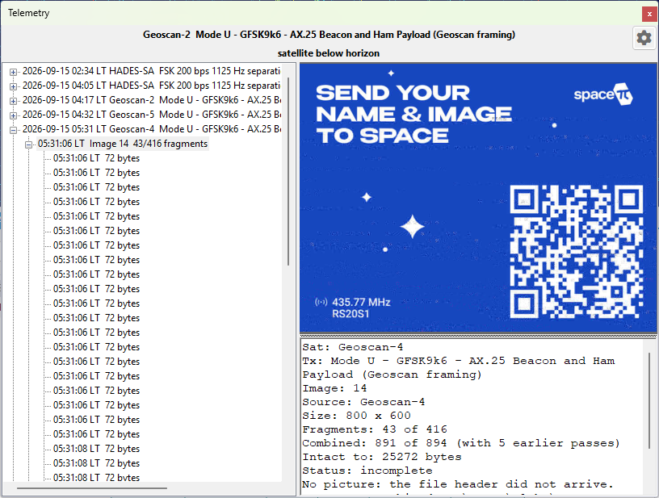

Receive SSDV Images
Some satellites send still pictures down as data, packed into the same telemetry stream that carries their housekeeping frames. SkyRoof reconstructs these pictures with its built-in decoder, right inside the program — there is no need for an external decoder, a Virtual Audio Cable, or an output stream. The picture is built up fragment by fragment in the Telemetry panel as the satellite passes overhead.
This is a different thing from SSTV, which sends an analog picture over an FM downlink, line by line. Here the picture is a JPEG file, cut into numbered packets that ride the telemetry downlink interleaved with ordinary telemetry frames. Nothing extra has to be turned on: if you are decoding telemetry from a satellite that sends images, the images are decoded too.
Supported Satellites
Two families of image transport are supported:
SSDV packets — the amateur-satellite digital SSTV format, where each packet carries the image ID, its own position in the picture, and a checksum. Sent by HADES-SA and by JY1SAT (JO-97).
Raw JPEG fragments — the picture is sent as byte ranges of the JPEG file itself. Sent by the Geoscan fleet and Lobachevsky, and by the Sputnix satellites — Luca, 239Alferov and HyperView-1G — as file transfers over their USP telemetry protocol.
The difference matters when the reception is imperfect. An SSDV packet that is lost costs only its own block of the picture, and the rest of the image is unharmed. In a raw JPEG a lost fragment desynchronizes everything after it, so the picture is good down to the first gap and, without help, noise below it — which is why the detail pane reports Intact to for these satellites and not for SSDV. SkyRoof repairs that damage automatically, see Repairing a Picture.
Receiving an Image
The steps are the same as for decoding telemetry:
Open the Telemetry panel from the View / Telemetry menu.
Select the satellite in the Satellite Selector on the toolbar. If it is not in the current group, add it using the Satellites and Groups dialog.
Select the satellite's telemetry transmitter — the one whose frames carry the pictures. Some satellites also have a separate SSDV row in the database. That row is not a transmitter of its own: it is the same signal on the same frequency, so selecting it works as well, and SkyRoof quietly pairs it with the co-channel telemetry transmitter that actually carries the packets.
Make sure the SDR is running and tuned to the satellite. The decoder uses the same Doppler-corrected passband as the receiver, so the satellite's signal must be visible on the waterfall at the tuned frequency.
Each picture appears as a node in the tree, under the pass node, labeled with the time it was first seen, the image number, and how many fragments have arrived:
04:12:37 Image 238 9/15 fragments
The frames that carry the picture are filed under that node rather than beside it, so a pass of thousands of fragments still reads as a handful of lines. A fragment that was read and not used says so: CRC FAIL for an SSDV packet whose checksum failed, duplicate for one already received, and not used for a raw-JPEG fragment the assembler could not place.
Select the node to watch the picture fill in as the pass goes on. The detail pane below the picture shows:
- Sat and Tx — the satellite and the transmitter the picture came from;
- Image — the image number the satellite gave it;
- Source — the sender, where the protocol names one: the Geoscan satellite that took the picture, or the file name for a USP file transfer;
- Size — the picture's dimensions in pixels;
- Fragments — how many fragments were received, of how many the picture spans;
- Intact to — for raw-JPEG satellites, how many bytes of the file are good before the first gap;
- Repair — what the repair recovered below that point, when it ran;
- Status —
receiving...,complete, orincompletefor a picture the pass ended in the middle of; - Saved — the file it was written to, once it has been saved.
An incomplete picture is normal rather than exceptional: a pass ends when the satellite sets, whatever the satellite was in the middle of sending. Missing parts are left gray.
Saved Images
Each finalized image is saved automatically as a JPEG file, with a JSON sidecar holding its metadata, in the SsdvImages subfolder of the data folder. The bytes are written exactly as received — gaps filled in and the file properly terminated — so whatever fraction of the picture arrived is a valid JPEG that any program can open.
A reception whose JPEG header never arrived has no picture to write, and the detail pane says so — No picture: the file header did not arrive. Its fragments are still archived, and a later pass that does catch the header turns them into a picture, see Combining Passes.
A picture built from a single fragment is not saved automatically, because one misread frame can look like one image fragment; neither is one with no recognizable geometry. Such an image is still shown in the tree and can still be saved by hand.
Right-click a picture in the detail pane to:
- Save As... — save the picture to a location of your choice;
- Copy — copy the picture to the clipboard;
- Open in Viewer — open the automatically saved JPEG in the program that Windows associates with JPEG files, where you can see it at full size. This command is available only after the image has been finalized and saved, so it stays grayed out while an image is still being received;
- Repair Damaged Image — see below;
- Combine with Previous Passes — see below.
Combining Passes
Satellites usually send the same picture several times, over consecutive passes, so that stations that missed a piece of it can pick that piece up later. SkyRoof can put those receptions together.
Right-click a picture and choose Combine with Previous Passes. SkyRoof searches the SsdvImages folder for earlier receptions of the same picture, merges their fragments with the ones just received, and shows the result. The menu item is grayed out when there is nothing to combine with, and shows the number of earlier receptions found when there is: Combine with Previous Passes (3).
The item is a toggle — choose it again to go back to what this pass alone heard. The detail pane reports both, on separate lines, so you can tell what the current pass contributed:
Fragments: 9 of 15
Combined: 14 of 15 (with 3 earlier passes)
Combining stays live while the pass runs: each new fragment is merged in as it arrives, and the combined picture keeps filling in on screen.

A few limits are worth knowing:
It works for SSDV as HADES-SA sends it, where each packet carries its own checksum, and for the raw JPEG of the Geoscan fleet and Lobachevsky, where a reception that contradicts the ones already merged is dropped whole instead. JY1SAT packets carry no checksum of their own and the Sputnix file transfers number a session rather than a file, so the menu item stays grayed out for their pictures.
Geoscan satellites transmit one shared playlist, so a picture received from one of them combines with receptions of the same picture from its siblings, as in the example above.
Only the last 30 days of the archive are searched. Image numbers are 8-bit and satellites reuse them freely — HADES-SA sent images 237, 238 and 239 twice within 92 minutes — so the window is what keeps a merge from reaching back to a different picture that happens to share a number. If two unrelated pictures do get merged, the result looks obviously wrong: toggle the combination off to get the pass's own reception back, exactly as it was.
The sidecar of each reception records the fragments of that reception only, never of a combination, so the archive stays a record of what was actually heard.
Repairing a Picture
In a raw JPEG, a lost fragment breaks the entropy coding, and everything the decoder reads after it is displaced and colour-shifted — the picture below the first gap is ruined even though most of its bytes arrived intact. SkyRoof repairs this automatically: it finds the surviving runs of scan data below each gap, puts them back where the encoder wrote them, and fills what the gap destroyed with gray. The detail pane reports what it found:
Repair: 2 gaps, 2 runs placed (1104 and 823 MCUs), 1 declined — 1927 of 2400 MCUs recovered
A declined run is one whose position could not be established with certainty; leaving it out is the safe answer rather than a failure. The repair has nothing to configure, and it runs before the picture is saved, so the JPEG on disk is the repaired one.
It cannot always help — a progressive JPEG, a file with restart markers, or one with no gap in its scan is emitted unchanged, and SSDV pictures never need it, because there a lost packet costs its own blocks and nothing else. Where it did run, Repair Damaged Image in the right-click menu is checked and can be unchecked to see the picture as the bytes came down. The item is grayed out on a picture the repair did not run on.